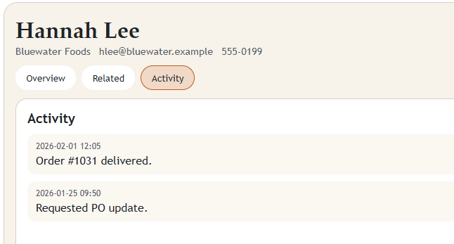
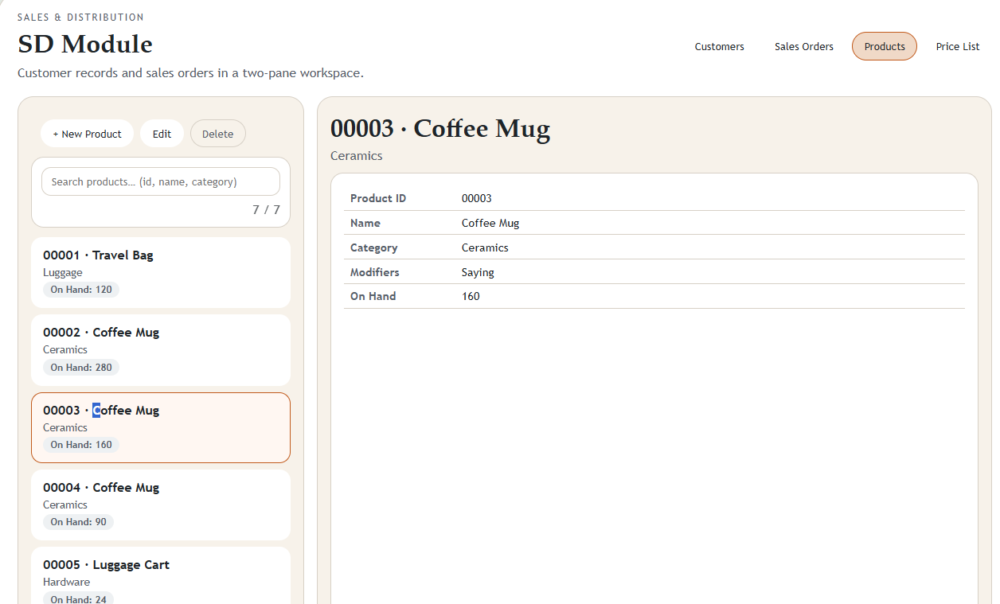
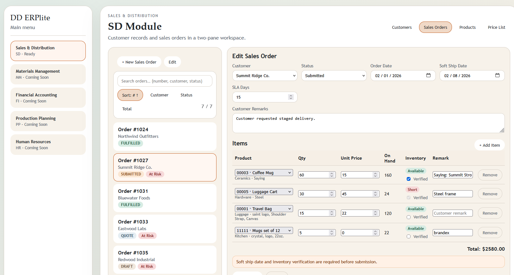

ERP Lite Architecture
Built on our Impala Architecture, ERP Lite ensures efficient and reliable performance for all your operational needs. Focused on the user to reduce complication, letting the system absorb the weight. We never forgot one of the first aspirations of technology, to simplify life. Error reduction and efficiency increases are just some natural benefits of well engineered workfows and solutions.
A relationship with what and how we create.
It is a common mis-calculation with large complex multifunction systems that by the time its users have the chance to meet the interface, the project is already over budget and past its completion date.
That those who will be spending the most time with this component never consulted about what might make their work more enjoyable. Unfortunately the interface is left for last, after all you must build the core and all the functional aspects without worry for the final form. Function, follows form, follows function. Complexity in the externally facing form often mirrors the internal complexity. Like how we are, on the inside, tends to exert influence over how we are, on the outside.
Constant consideration for how our work will impact the world, and those who interact with it, instills a responsibility carried long after deployment. With focus on detail like that, that creates craft.
Platoform independent, adaptable design.
We do not leverage frameworks or libraries that lock us into a specific platform, ensuring our designs remain adaptable and future-proof. No restrictions, no compromises.
This is not a template, it's a place to start to build the tools to help you conduct business, your way.
Test DriveOnly what you need, where you need it.
No endless layers of menus, submenu navigation, or hidden options. Everything you need is accessible where you need it. By learning your processes, the system is laid out to reduce or eliminate having to travel over the same menus repeatedly.

By bringing only the informmation needed often forward, users can focus on the most relevant tasks without distraction. Approaching the design with this in mind, as your processes evolve, the interface adapts to keep the most important information readily accessible.
Custom modifiablabl options help bridge the gap between user needs and system capabilities and can be afflied to data ojbect type or scoped to family or category..


Custom modifyable options help bridge the gap between user needs and system capabilities and can be afflied to data ojbect type or scoped to family or category..